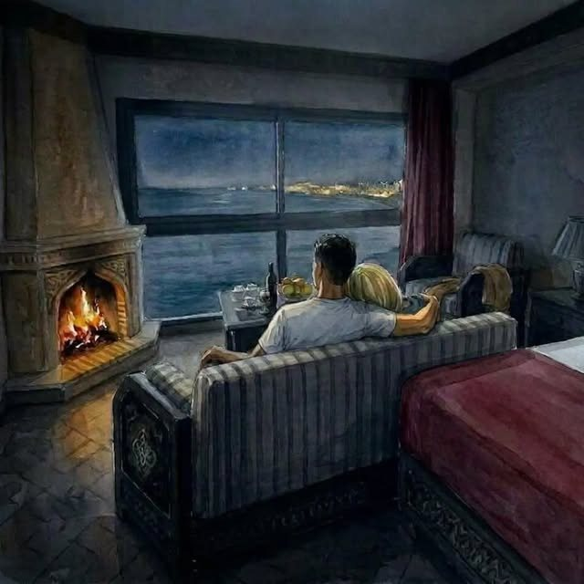
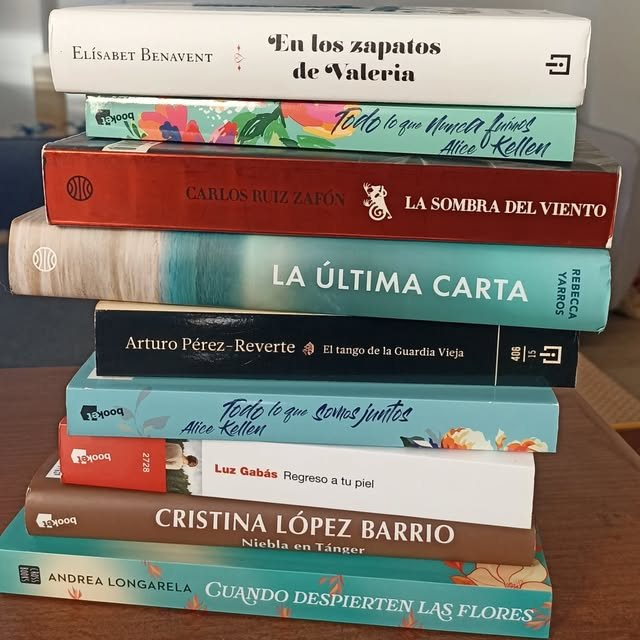

¿Quién soy?
Soy Alba Galiano Fernández, madrileña, lectora desde siempre y novelista desde que una ciudad junto al Nilo me cambió la forma de mirar.

Madrid, los idiomas y las palabras
Nací en Madrid en 1991. Estudié Lenguas Modernas y sus Literaturas en la Universidad Complutense de Madrid, donde me abrí al mundo de los idiomas, descubrí autores de otras lenguas y disfruté a fondo del ambiente universitario.
Creo que a una persona se la conoce por lo que hace en su tiempo libre. En mi caso, leer y viajar: en casa hay libros por todas partes, porque a escribir se aprende leyendo, y viajar es algo con lo que crecí gracias a mis padres.
Aprender idiomas me enseñó algo que hoy está en el centro de todo lo que escribo: que detrás de cada lengua hay una manera distinta de querer, de callar y de pertenecer a un lugar.

El viaje que se convirtió en novela
Después de casarme y formar una familia, nos mudamos a El Cairo, donde mi marido consiguió un puesto en la Embajada. Allí viví cinco años que fueron decisivos para escribir Una puerta abierta al mar.
Lo que viví como mujer en un país árabe, la cercanía con el mundo diplomático y las familias en las que conviven varias culturas bajo un mismo techo se fueron colando en mis cuadernos hasta dar forma a Nadia, a Samir y a su Casablanca.
La novela es un cóctel de experiencias vividas en aquellos años: el reflejo de una sociedad donde las tradiciones pesan mucho, un abuelo que se parece al mío y una conexión que muchos hemos vivido. Algunas escenas las imaginé antes de pisar sus calles, como Essaouira, y después fui a buscarlas en persona.
Escribo historias donde el amor se mezcla con las emociones, las diferencias culturales, el mundo laboral y la pregunta de quiénes somos.
Mi camino en la literatura
Un proyecto que acaba de empezar a caminar, paso a paso y con mucha ilusión.
Lenguas Modernas y sus Literaturas
Universidad Complutense de Madrid. Los idiomas y la literatura de otros países como punto de partida.
Cinco años entre culturas
La experiencia que inspiró la novela: el mundo diplomático, la vida de una mujer en un país árabe y las familias que unen varias culturas.
Publicación de Una puerta abierta al mar
Mi primera novela, publicada por Editorial Gusanillo dentro de su colección de novela romántica.
Primeros encuentros con lectores
Mi primer pop-up market en Madrid, puestos de libros, reseñas en Bookstagram y la presentación en la Biblioteca Benjamín Palencia (Villa de Vallecas).
Una trilogía en marcha
Mi deseo es que esta novela sea la primera parte de una trilogía. Descubre el proyecto.
Los temas de mis historias
- Identidad y pertenencia
- Amor entre culturas
- Familia y tradición
- Libertad personal
- Autonomía de la mujer
- Memoria y duelo
- Segundas oportunidades
- El mar como hogar
Si quieres invitarme a un club de lectura, una feria, una biblioteca o un medio de comunicación, escríbeme. Me encanta conversar con lectoras y lectores.
Contáctame

Una puerta abierta al mar
Novela romántica contemporánea · Editorial Gusanillo · 304 páginas